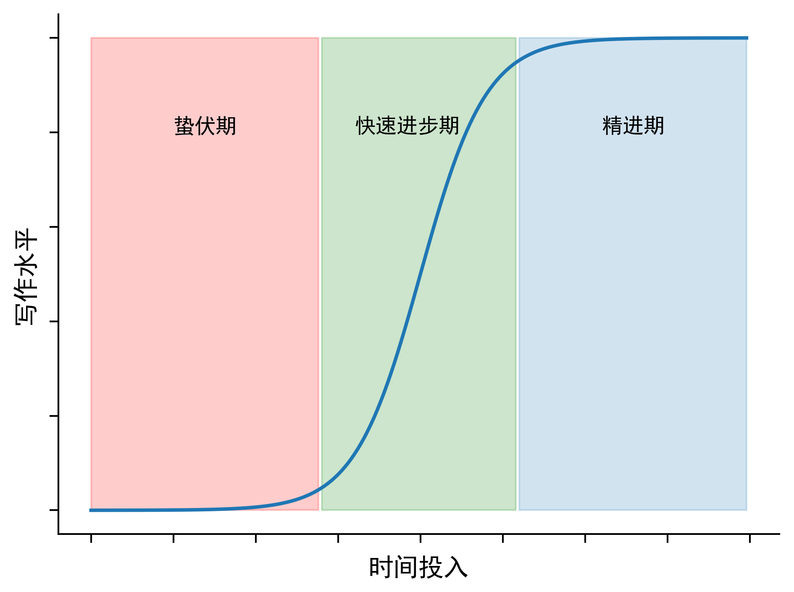

认知神经科学英文写作经验(1)前言心理建设英语不好绝不是写不好英文论文的主要原因写好英文论文的最重要因素是练习量英文论文写作水平是一个随时间sigmoid函数英文论文写作和中国语文教育的逻辑完全相反英文论文写作类似于修炼逐层往上的武功工具准备WordAdobe illustrator, photoshopMatlab/PythonSPSS/JAGS/R欧陆词典GrammarlyLingglethesaurus
作为一个在认知神经科学领域探索了多年的科研工作者，虽然写作也一直是我的短板，但是一直对如何提高英语论文写作有着浓厚的兴趣。在过去的科研生涯中，自己学习英文写作走了很多弯路，也亲身体会到到英语论文写作一直是中国学生的痛点难点，但是我发现网络上针对中国学生的写作指导，尤其是集中在认知神经科学领域的很少，希望这一系列的文章能对初入这个领域的青年科研人员有一些帮助。
这一系列经验分享文章，只针对:
另外也想做这样几个声明:
在说具体的一些写作技巧之前，先分享一些对英语写作的基本认识。
个人觉得中国学生一个最大的误区就是认为自己写不好英文论文是因为英语不过关。尤其是很多国内的学生，因为没有留学经历，更是先默认了自己英语不好导致没有信心写好英文论文。我曾帮助一些学生修改论文，发现最大的问题是不知道写什么，没有受过训练，英语水平只是一个次要问题。其实可以问自己一个很简单的问题，如果全部用中文，你有信心写出好的论文么？作为一个修改者，如果原作者的写作内容逻辑完全没问题，剩下的只是翻译成合适的英文的话，反而工作很简单。但是大多数情况是语言和逻辑问题混杂，极大的增加了修改难度。所以，如果抛弃英文你能用中文写出逻辑结构清楚间接的论文的话，基本上你的英文写作也成功了80%。
接着第一条，决定写好英文论文的不是自身英语水平而是练习量。因为我发现一个美国的研究生没有受过训练的，前几次写论文也基本抓瞎，而一个国内的博士生如果发表了多篇论文，反而写的很顺手。所以其实最关键的是练习量，英语水平确实能助力写作，但是与其花时间背词典不如真正的多练习写作。另外请正确看待灌水问题，论文灌水多也许不能在别的方面帮助科研，可是对练习写作是非常有帮助的。一个认真写过10篇plos one的人可能比只写过一篇nature的人写作水平要高一点。
英文论文写作之所以让人感觉到困难，还有一个很重要的原因，是写作水平并不是和练习量线性相关，而是一个sigmoid函数。换句话说，在前期的练习和时间精力投入，会有很长的一段时间看不出有什么明显效果(我叫‘’蛰伏期‘’)，这非常让人沮丧，很多人也在这段时间放弃。但是记住，蛰伏期的练习和积累，绝对不是没有效果的，因为只有积累到一定程度，你会发现在一两年短时间内你会进入一个快速进步期，过了这个快速发展期，基本可以作为PI独立写作了。之后会进入另一个长达多年的精进期。我的导师告诉我她快50岁的人了，感觉自己的写作还在提高进步。从我自身经验来看，一直到我PhD毕业，我的写作还是很烂，直到最近几年才感觉能够独立写东西。对于青年研究者来说，通过大量练习，快速的突破蛰伏期才是最关键的
。
中国学生觉得英文写作难还有一个重要原因，就是英文论文写作和中国的语文教育逻辑完全相反。中国学校里面的语文教育，绝大多数的是看重文学素养的培养。比如学习语文的时候最常见的问题就是“这几句蕴含了作者/诗人怎样的情感”，然后学生只能抓瞎去猜，因为我国伟大的文人们绝不会明说他们到底要表达什么。英语论文写作(甚至更一般的职业中的语言表达)绝不是文学创作，讲究的是最简洁高效快速的传递信息，让读者去猜意思是论文写作的大忌，清楚直接的表达需要不断的练习。希望写论文的时候保持这样一个心态，就是假设读者的阅读理解能力远比你预想的要低。
从我过去的写作经验来看，学习写作就类似于金庸武侠小说里面修炼武功。比如乾坤大挪移，你需要一层一层往上练，每到新的一层，都会有新的体会，回头看自己之前的很多想法其实并不合适。我帮别的学生改论文，发现很多人也重复着我最开始的一些不够准确的认识。每突破一层也都需要大量的练习和总结。我希望我能分享一些技巧可以帮助新手快速突破前几层。
工欲善其事必先利其器，在正式分享写作经验之前，我先分享一下我日常用的帮助英文论文写作的几个工具:
在认知神经科学领域，如果不是特别强调计算，一般不需要用到latex。另外，写正式论文的时候推荐用word，平常写博客，尤其是教程，强烈建议用markdown，对代码块，公式等都有非常好的支持，比如这一系列文章将就是用markdown写的。
作图专用，尤其是利用illustrator矢量图图片编辑，而我们从matlab或者python出图都尽量存成矢量图(pdf格式)。
一般作图用，个人不推荐用比如excel, origin，能用code就不要手动设置，因为写作中你会把图改无数遍。手动修改的话会改到吐。
统计软件。SPSS是老牌的统计软件，功能强大，但是要收费。JASP是一个新的免费open-source的统计软件。R功能更强大，但是需要写代码来做统计。
能够自己导入网友自己制作的词典内容，我另外导入了英汉，汉英，英英，近义词反义词词典，也包含了有道在线词典，个人感觉在释义，近义词反义词等做的很细致，功能非常强大。但是不免费，如果不想付费的话可以用免费的有道词典，但是功能差了一些。
一个免费检查语法的网站，我用的其免费版本，至少可以做spellcheck和一些时态单复数的检查，不要相信word自带的语法spellcheck和语法检查。我建议任何东西写完了都用Grammaly检查一遍。Chrome上还有它的插件，似乎windows里面的word也有其插件可以实时检查。
语法语词搭配网站，比如当不知道是用to/on/over的时候，这个网站很有用
近反义词查询网站，对于用词的灵活性很有帮助